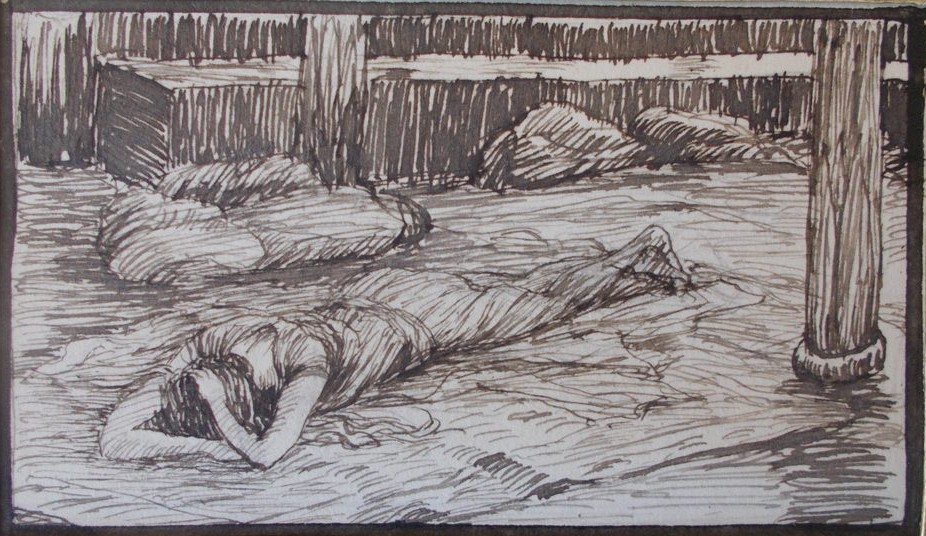

2 Samuel 11 — La Traducción Mister

2 Samuel 11:26. Cuando la mujer de Urías oye que su marido ha muerto, hace duelo por él. Es uno de los bocetos a pluma de Tissot para sus ilustraciones del Antiguo Testamento, publicados tras su muerte como cromolitografías; muestra el duelo y nada del resto del capítulo. El hebreo dice solo que hizo duelo, y no cómo.

Notas del traductor — versículo por versículo
Los mensajeros, o los reyes. «A la vuelta del año, al tiempo en que salen los mensajeros»: el texto hebreo tal como está escrito tiene hammal’akhim, «los mensajeros», donde seis de las siete versiones del estante tienen «reyes» (la TLB inglesa tiene «when wars begin»). «A la vuelta del año» está en cuatro versículos. Son este, 1 Reyes 20:22 y 26, donde el rey de Aram sube a la vuelta del año, y 2 Crónicas 36:10, donde Nabucodonosor envía (ninguno todavía en estas páginas). Siempre es la estación en que los ejércitos vuelven al campo. «La salida de los reyes» está en un versículo, el paralelo de Crónicas (1 Crónicas 20:1), y el griego tiene tōn basileōn, «de los reyes». La RV 1909 tiene «á la vuelta de un año, en el tiempo que salen los reyes á la guerra»; la RV60 «en el tiempo que salen los reyes a la guerra»; la NVI «que era la época en que los reyes salían de campaña»; la TNM 1987 «al tiempo en que suelen salir los reyes a campaña». Esta traducción conserva lo que dice el texto hebreo y no lee en él la palabra de Crónicas: una estación de mensajeros que salen, y un rey que no sale.
Arruinaron, y sitiaron. «Y David envió a Joab y a sus siervos con él y a todo Israel; y arruinaron a los hijos de Amón, y sitiaron Rabá»: el verbo es shachat, «arruinar, estropear», y el sitio es vayyatsuru, «y cercaron», la guerra que el capítulo 10 dejó parada a la puerta (2 Samuel 10:14, ya en estas páginas). Rabá es la ciudad de los hijos de Amón (Rabá). La RV60 tiene «destruyeron a los amonitas, y sitiaron a Rabá»; la TNM 1987 «para que arruinaran a los hijos de Ammón y sitiaran a Rabá»; la NVI «para que aniquilara a los amonitas y sitiara la ciudad de Rabá»; la RV 1909 «destruyeron á los Ammonitas, y pusieron cerco á Rabba»; la TLB inglesa «to destroy the Ammonites». En el capítulo anterior David cruzó el Jordán él mismo (10:17); aquí envía a «todo Israel» y se queda.
David estaba morando en Jerusalén. «Y David estaba morando en Jerusalén»: yoshev, «sentado, morando», un participio, de modo que la frase dice lo que David estaba haciendo mientras seguía la guerra. La raíz vuelve en el versículo 12, cuando David dice a Urías «Quédate aquí» y Urías «se quedó» en Jerusalén. La RV60 tiene «pero David se quedó en Jerusalén»; la NVI «Pero David se quedó en Jerusalén»; la TNM 1987 «mientras David moraba en Jerusalén»; la RV 1909 «mas David se quedó en Jerusalem». Crónicas da la misma frase y la sigue enseguida con «Y Joab hirió a Rabá, y la destruyó» (1 Crónicas 20:1); la historia de los veintiséis versículos siguientes se cuenta solo aquí, entre esas dos cláusulas.
El terrado, y una mujer que se lavaba. «Y sucedió al atardecer que David se levantó de su lecho y se paseó por el terrado de la casa del rey; y desde el terrado vio a una mujer que se lavaba; y la mujer era muy hermosa de ver»: el verbo de su lavarse, rachatz, es el que David usará en el versículo 8, «lávate los pies». «Muy hermosa de ver» es tovat mar’eh me’od, las palabras de Rebeca (Génesis 24:16, donde la primera palabra se escribe sin la vav, y 26:7, ya en estas páginas). La RV 1909 tiene «vió desde el terrado una mujer que se estaba lavando, la cual era muy hermosa»; la RV60 «vio desde el terrado a una mujer que se estaba bañando, la cual era muy hermosa»; la NVI «La mujer era sumamente hermosa»; la TNM 1987 «la mujer era de muy buena apariencia»; la Douay inglesa «arose from his bed after noon», la única versión que mueve la hora. El terrado es el de la casa del rey, y la próxima vez que se nombra un terrado en la casa de David la tienda de Absalón está en él (2 Samuel 16:22).
¿No es esta Betsabé? «Y David envió y preguntó por la mujer; y uno dijo: “¿No es esta Betsabé, hija de Eliam, mujer de Urías el heteo?”»: la respuesta le da un padre y un marido y ninguna palabra propia; quien responde es «uno», sin nombre. Un Eliam hijo de Ahitofel el gilonita se nombra entre los Treinta de David (2 Samuel 23:34), y Crónicas pone a «Bat-súa hija de Amiel» como madre de Salomón (1 Crónicas 3:5); si el Eliam es el mismo, el texto no lo dice. «Urías el heteo» está en diez versículos, cinco de ellos en este capítulo (3, 6, 17, 21, 24); los otros son 2 Samuel 12:9, 10; 23:39; 1 Reyes 15:5 y 1 Crónicas 11:41 (ninguno todavía en estas páginas), y el último de los Treinta es «Urías el heteo» (2 Samuel 23:39). Su nombre acaba en el de Jehová: Uriyyah, «Jehová es mi luz». Es heteo como Ahimelec, que bajó con David al campamento de Saúl (1 Samuel 26:6, ya en estas páginas). La RV60 tiene «Aquella es Betsabé hija de Eliam, mujer de Urías heteo»; la RV 1909 «Aquella es Bath-sheba hija de Eliam, mujer de Uría Hetheo»; la NVI «Se trata de Betsabé, que es hija de Elián y esposa de Urías el hitita»; la TNM 1987 «¿No es esta Bat-seba hija de Eliam la esposa de Urías el hitita?». El griego tiene Eliab para el padre.
Envió … tomó. «Y David envió mensajeros, y la tomó; y ella vino a él, y él se acostó con ella»: los verbos son de David, «envió», «tomó», «se acostó», y el hebreo no le da a ella ninguna palabra aquí. El rey «toma» como Samuel había dicho que haría: «a sus hijas las tomará» (1 Samuel 8:13; 8:11, 16, ya en estas páginas). El capítulo 9 tenía un rey que devolvía un campo (2 Samuel 9:7); este es el capítulo en que toma. La RV60 tiene «Y envió David mensajeros, y la tomó; y vino a él, y él durmió con ella»; la RV 1909 «envió David mensajeros, y tomóla: y así que hubo entrado á él, él durmió con ella»; la NVI «David ordenó que la llevaran a su presencia y, cuando Betsabé llegó, él se acostó con ella»; la TNM 1987 «David envió mensajeros para poder tomarla. De modo que ella entró a donde él, y él se acostó con ella».
Santificándose de su impureza. «Ella se estaba santificando de su impureza»: «santificándose» (mitqaddeshet) está en un versículo, y «de su impureza» (mittum’atah) está en un versículo también, el mismo. La impureza es la de Levítico 15, la «separación mensual» de siete días de una mujer (Levítico 15:19), después de los cuales «quedará pura» (15:28, ambos ya en estas páginas). Suele leerse como el fin de su período, lo que dejaría fuera de duda que el hijo es de David; el hebreo dice solo lo que ella estaba haciendo. La NVI tiene «Hacía poco que Betsabé se había purificado de su menstruación»; la TNM 1987 «mientras ella estaba santificándose de su inmundicia»; la RV60 «Luego ella se purificó de su inmundicia»; la RV 1909 «Purificóse luego ella de su inmundicia». El griego tiene hagiazomenē apo akatharsias autēs, «siendo santificada de su impureza».
Estoy encinta. «Y la mujer concibió; y envió y se lo hizo saber a David, y dijo: “Estoy encinta”»: harah anokhi, dos palabras, y son las únicas que Betsabé dice en el capítulo; hace duelo en el versículo 26, pero sin discurso. La RV60 tiene «Estoy encinta»; la TNM 1987 «Estoy encinta»; la RV 1909 «Yo estoy embarazada»; la NVI no da palabras, «se lo hizo saber a David». El griego tiene en gastri echō, «tengo en el vientre». Ella «envió» a David como David ha sido el que «envió».
El bienestar de la guerra. «Y David envió a Joab: “Envíame a Urías el heteo” … y David preguntó por el bienestar de Joab, y por el bienestar del pueblo, y por el bienestar de la guerra»: el hebreo tiene lishlom, «por la paz de», tres veces, la última de la guerra misma, y la palabra es la de vayyashlimu, «hicieron paz», que cerró el capítulo anterior (2 Samuel 10:19, ya en estas páginas). La RV60 tiene «David le preguntó por la salud de Joab, y por la salud del pueblo, y por el estado de la guerra»; la RV 1909 «preguntóle David por la salud de Joab, y por la salud del pueblo, y asimismo de la guerra»; la NVI «David preguntó cómo estaban Joab y los soldados, y cómo iba la campaña»; la TNM 1987 «David empezó a preguntar cómo le iba a Joab y cómo le iba a la gente y cómo iba la guerra».
Lávate los pies. «Baja a tu casa, y lávate los pies. Y salió Urías de la casa del rey, y salió tras él una porción del rey»: rachatz otra vez, como de la mujer en el terrado. Si «pies» es solo los pies del viajero o una palabra delicada para algo más, el hebreo no lo dice, y las preguntas siguientes del rey dejan ambas cosas abiertas. Masse’t es una porción que se alza de una mesa y se envía, señal de favor. La RV60 tiene «Desciende a tu casa, y lava tus pies» y «le fue enviado presente de la mesa real»; la RV 1909 «vino tras de él comida real»; la NVI «Vete a tu casa y lávate los pies» y «recibió un regalo de parte del rey»; la TNM 1987 «Baja a tu casa y lávate los pies» y «el obsequio del rey salió tras él».
La puerta de la casa del rey. «Y Urías se acostó a la puerta de la casa del rey, con todos los siervos de su señor; y no bajó a su casa»: su señor es el rey y su «señor Joab» (versículo 11) es el que está en el campo; el hebreo usa la misma palabra para ambos, adon. La RV60 tiene «durmió a la puerta de la casa del rey con todos los siervos de su señor»; la TNM 1987 «se acostó a la entrada de la casa del rey con todos los demás siervos de su señor»; la NVI «se acostó a la entrada del palacio, donde dormía la guardia real». Se lo cuentan a David, y este pregunta: «¿No has venido de camino? ¿Por qué no bajaste a tu casa?»
En cabañas. «El arca, e Israel, y Judá, están morando en cabañas; y mi señor Joab y los siervos de mi señor están acampados en el campo abierto; ¿y voy yo a entrar en mi casa, a comer y a beber y a acostarme con mi mujer? Por vida tuya, y por vida de tu alma, no haré esta cosa»: los tres verbos, comer, beber, acostarse, son los que David acaba de hacer y de hacerle hacer; «acostarme con mi mujer» (lishkav im ishti) es el verbo del versículo 4. Las cabañas son las cabañas de la fiesta, «En cabañas habitaréis siete días» (Levítico 23:42, ya en estas páginas), y el arca ha salido con el ejército, frente a la «casa de cedro» del propio rey con el arca «dentro de la cortina» (2 Samuel 7:2, ya en estas páginas). «Como vive tu alma» está en once versículos. Entre ellos están Ana a Elí (1 Samuel 1:26), Abner a Saúl (17:55), David a Jonatán (20:3), Abigail a David (25:26, todos ya en estas páginas), este versículo, y otros seis (2 Samuel 14:19; 2 Reyes 2:2, 4, 6; 4:30; Jeremías 38:20). La RV 1909 tiene «están debajo de tiendas»; la RV60 «están bajo tiendas»; la NVI «se guarecen en simples enramadas»; la TNM 1987 «están morando en cabañas». El griego tiene en skēnais, «en tiendas».
Lo embriagó. «Quédate aquí hoy también, y mañana te despediré … y lo embriagó; y salió por la tarde a acostarse en su lecho con los siervos de su señor, pero a su casa no bajó»: shev, «quédate», es la raíz del «morando» de David en el versículo 1, y Urías «se quedó» un segundo día. La RV60 tiene «hasta embriagarlo» y «a dormir en su cama con los siervos de su señor»; la NVI «logró emborracharlo»; la TNM 1987 «De modo que lo emborrachó». Tres veces llama el rey y tres veces Urías no baja, una a la puerta, una sobrio y una borracho.
Por mano de Urías. «Y sucedió por la mañana que David escribió una carta a Joab; y la envió por mano de Urías»: la frase es la del capítulo 10, donde David envió consoladores «por mano de sus siervos» (2 Samuel 10:2, ya en estas páginas). El hombre lleva su propia sentencia. Una reina escribirá más tarde cartas en nombre de un rey contra un hombre que ha de ser puesto «a la cabeza del pueblo» y apedreado (1 Reyes 21:8–10). La RV60 tiene «escribió David a Joab una carta, la cual envió por mano de Urías»; la RV 1909 «la cual envió por mano de Uría»; la NVI «se la envió por medio de Urías»; la TNM 1987 «escribir una carta a Joab y a enviarla por mano de Urías»; la Douay inglesa «wrote a letter to Joab: and sent it by the hand of Urias».
La batalla fuerte. «Pongan a Urías frente a la batalla fuerte, y vuélvanse atrás de él, para que sea herido y muera»: hachazaqah, «la fuerte», es la raíz del «Esfuérzate, y esforcémonos» de Joab en el capítulo 10 (2 Samuel 10:12) y del «haz fuerte tu batalla» de David en el versículo 25. El verbo de la última cláusula es nikkah, «ser herido», el verbo de «herir» en estas guerras, y aquí el golpe se arregla retirándose. La RV60 tiene «Poned a Urías al frente, en lo más recio de la batalla, y retiraos de él, para que sea herido y muera»; la RV 1909 «Poned á Uría delante de la fuerza de la batalla, y desamparadle»; la NVI «Pongan a Urías al frente de la batalla, donde la lucha sea más dura»; la TNM 1987 «Pongan a Urías enfrente de los ataques más pesados de la batalla». El griego tiene tou polemou tou krataiou, «la batalla fuerte».
Donde sabía que había hombres valientes. «Mientras Joab vigilaba la ciudad, puso a Urías en el lugar donde sabía que había hombres valientes. Y salieron los hombres de la ciudad y pelearon con Joab; y cayeron algunos del pueblo, de los siervos de David; y murió también Urías el heteo»: Joab pone a Urías donde están los mejores defensores, anshei chayil, y Joab es de quien David ha dicho que los hijos de Sarvia «son demasiado duros para mí» (2 Samuel 3:39, ya en estas páginas). Otros caen con Urías; el hebreo dice «también». La RV60 tiene «cuando Joab sitió la ciudad, puso a Urías en el lugar donde sabía que estaban los hombres más valientes»; la RV 1909 «cuando Joab cercó la ciudad, puso á Uría en el lugar donde sabía que estaban los hombres más valientes»; la NVI «puso a Urías donde sabía que estaban los defensores más aguerridos»; la TNM 1987 «mientras Joab vigilaba sobre la ciudad». Para la muerte la RV60 tiene «cayeron algunos del ejército de los siervos de David; y murió también Urías heteo»; la NVI «entre los oficiales de David que cayeron en batalla también perdió la vida Urías el hitita»; la TNM 1987 «cayeron algunos del pueblo, los siervos de David, y Urías el hitita también murió».
Si sube la ira del rey. «Y Joab envió e hizo saber a David todos los asuntos de la guerra; y mandó al mensajero, diciendo: “Cuando acabes de contar al rey todos los asuntos de la guerra, sucederá que si sube la ira del rey, y te dice: ‘¿Por qué se acercaron a la ciudad a pelear? ¿No sabían que dispararían desde el muro?’”»: Joab escribe la ira del rey antes de que haya venido, y las palabras para apagar el fuego después. Davar, «palabra, asunto, cosa», recorre el capítulo: «los asuntos de la guerra» en los versículos 18 y 19, «esta cosa» en los versículos 11 y 25, «la cosa que David había hecho» en el versículo 27. La RV60 tiene «si el rey comenzare a enojarse» y «lo que suelen arrojar desde el muro»; la NVI «tal vez se enoje» y «les dispararían desde la muralla»; la TNM 1987 «si sube la furia del rey» y «dispararían desde encima del muro».
Abimelec en Tebez. «¿Quién hirió a Abimelec hijo de Jerubéset? ¿No fue una mujer la que arrojó sobre él una piedra superior de molino desde el muro, y murió en Tebez?»: «una piedra superior de molino» (pelach rekhev) está en dos versículos. Son este y Jueces 9:53 (ya en estas páginas), donde «una mujer arrojó una piedra superior de molino sobre la cabeza de Abimelec, y le quebró el cráneo», y él llamó a su escudero para que lo matara «para que no digan de mí: Una mujer lo mató» (9:54, ya en estas páginas). Joab recurre a la advertencia más conocida sobre acercarse a un muro. «Jerubéset» está en un versículo; Jueces tiene Jerubaal, Gedeón, de modo que bosheth, «vergüenza», ocupa el lugar de baal, como en Is-boset y Mefi-boset. La RV60 tiene «Jerobaal», y el griego Ierobaal. La TNM 1987 tiene «Abimélec hijo de Jerubéset» y «una piedra superior de molino»; la NVI «Abimélec, hijo de Yerubéset»; la RV 1909 «un pedazo de una rueda de molino». El texto no traza línea de la mujer del muro a la mujer del terrado; el lector puede.
También ha muerto. «Y el mensajero fue, y llegó y contó a David todo aquello para lo que Joab lo había enviado. Y el mensajero dijo a David: “Los hombres prevalecieron contra nosotros, y salieron a nosotros al campo; pero nosotros estuvimos sobre ellos hasta la entrada de la puerta. Y los flecheros dispararon contra tus siervos desde el muro; y murieron algunos de los siervos del rey; y también tu siervo Urías el heteo ha muerto”»: el mensajero da el informe y no el discurso sobre Abimelec; la ira de David no sube, de modo que la frase no hace falta. La RV60 tiene «Prevalecieron contra nosotros los hombres»; la NVI «Los soldados enemigos nos estaban venciendo»; la TNM 1987 «Los hombres resultaron superiores a nosotros». Para los flecheros la RV60 tiene «los flecheros tiraron contra tus siervos desde el muro»; la NVI «los arqueros dispararon desde la muralla»; la TNM 1987 «los disparadores siguieron disparando contra tus siervos desde encima del muro».
No sea malo este asunto a tus ojos. «No sea malo este asunto a tus ojos, porque la espada devora de esta manera y de aquella. Haz fuerte tu batalla contra la ciudad, y derríbala. Y anímalo»: «No sea malo a tus ojos» está en dos versículos. Son la palabra de Dios a Abraham sobre Agar e Ismael, «No te parezca grave a tus ojos» (Génesis 21:12, ya en estas páginas), y este. «La espada devora» está en tres versículos. Son el «¿Devorará la espada para siempre?» de Abner (2 Samuel 2:26, ya en estas páginas), este, y Nahúm 2:14. Las versiones dan al hebreo kazeh vekazeh, «como este y como este», su sentido y pierden su forma. La RV60 tiene «No tengas pesar por esto, porque la espada consume, ora a uno, ora a otro»; la NVI «la espada devora sin discriminar»; la TNM 1987 «No parezca malo este asunto a tus ojos, porque la espada lo mismo se come al uno que al otro»; la RV 1909 «que de igual y semejante manera suele consumir la espada». El griego tiene mē ponēron estō en ophthalmois sou to rhēma touto, y las mismas palabras, ponēron … en ophthalmois, vuelven en el versículo 27.
Se lamentó. «Y la mujer de Urías oyó que Urías su marido había muerto; y se lamentó por su marido»: el hebreo tiene dos palabras para «marido», ish, «su hombre», y luego ba’al, «su dueño, su señor»; y aquí no se la llama Betsabé, sino «la mujer de Urías». El verbo de su duelo, sapad, es el verbo de la orden de David a la muerte de Abner, «hagan duelo delante de Abner» (2 Samuel 3:31, ya en estas páginas). La RV60 tiene «hizo duelo por su marido»; la RV 1909 «hizo duelo por su marido»; la NVI «hizo duelo por él»; la TNM 1987 «se puso a plañir por su dueño». El griego tiene ekopsato, «se golpeó».
La recogió en su casa. «Y pasado el luto, envió David y la recogió en su casa; y ella fue su mujer, y le dio a luz un hijo»: «Y pasó el luto» está en un versículo. El verbo de lo que David hace con ella ya no es «tomó» sino asaf, «recogió», el verbo del reunir Saúl consigo a cualquier hombre valiente (1 Samuel 14:52, ya en estas páginas) y, en los pescadores de Habacuc, de lo que se mete en la red (Habacuc 1:15, ya en estas páginas). La RV 1909 tiene «envió David y recogióla á su casa»; la RV60 «envió David y la trajo a su casa»; la NVI «David mandó que se la llevaran al palacio»; la TNM 1987 «David en seguida envió y la acogió en su casa». El hijo no se nombra; el capítulo siguiente nombra a Salomón (2 Samuel 12:24), tras otro hijo.
Mala a los ojos de Jehová. «Pero la cosa que David había hecho fue mala a los ojos de Jehová»: Jehová no se nombra en ninguna parte del capítulo hasta esta última cláusula. «Y fue mala la cosa» está en tres versículos. Son el dolor de Abraham por la petición de Sara sobre Ismael (Génesis 21:11, ya en estas páginas), el de Samuel por la petición del pueblo de un rey (1 Samuel 8:6, ya en estas páginas), y este. Responde al propio «No sea malo este asunto a tus ojos» de David en el versículo 25, con el mismo verbo y el mismo sustantivo, y los ojos son ahora los de Jehová. La TNM 1987 tiene «pareció mala a los ojos de Jehová»; la RV60 «fue desagradable ante los ojos de Jehová»; la RV 1909 «fué desagradable á los ojos de Jehová»; la NVI «lo que David había hecho desagradó al Señor». El griego tiene ponēron ephanē to rhēma … en ophthalmois kyriou, «la cosa pareció mala a los ojos del Señor». La pregunta de Natán será «hacer lo malo ante mis ojos» (2 Samuel 12:9); el libro de Reyes guardará una excepción en el historial de David, «salvo en lo tocante a Urías el heteo» (1 Reyes 15:5); y un salmo lleva la ocasión en su encabezado, «después de que él se hubo llegado a Betsabé» (Salmo 51:2, ya en estas páginas).
Patrones que vale la pena llevar adelante
Dónde esta traducción mantiene las palabras exactas y distintas: «los mensajeros» como lo tiene el hebreo, con los «reyes» de Crónicas en la nota; «arruinaron» y «sitiaron»; «morando» y «se quedó» para la raíz yashav; «envió» y «tomó»; «santificándose»; «el bienestar de» tres veces; «lavar» en los versículos 2 y 8; «cabañas»; «la batalla fuerte» y «haz fuerte tu batalla»; «una piedra superior de molino»; «No sea malo este asunto a tus ojos» y «la cosa … fue mala a los ojos de Jehová»; «marido» para ish y para ba’al.
Ecos pagados. El capítulo anterior y su bondad (2 Samuel 9:7; 10:2, 12, 14, 17, 19); el rey que toma (1 Samuel 8:6, 11, 13, 16); la belleza de Rebeca (Génesis 24:16; 26:7); la impureza de Levítico 15 (15:19, 28); las cabañas de la fiesta (Levítico 23:42); el arca dentro de la cortina (2 Samuel 7:2); «como vive tu alma» (1 Samuel 1:26; 17:55; 20:3; 25:26); Ahimelec el heteo (1 Samuel 26:6); los hijos de Sarvia demasiado duros para David (2 Samuel 3:39); la espada que devora (2 Samuel 2:26); el duelo por Abner (2 Samuel 3:31); Abimelec y la mujer del muro (Jueces 9:53–54); el «grave a tus ojos» de Agar (Génesis 21:11–12); el reunir de Saúl a los valientes (1 Samuel 14:52); y el encabezado del Salmo 51.
Ecos sembrados. El relato de Crónicas, que omite el asunto (1 Crónicas 20:1); los Treinta y Eliam y Urías (2 Samuel 23:34, 39; 1 Crónicas 11:41); Bat-súa hija de Amiel (1 Crónicas 3:5); la tienda de Absalón en el terrado (2 Samuel 16:22); el «malo ante mis ojos» de Natán, la espada que nunca se apartará y el nacimiento de Salomón (2 Samuel 12:9, 10, 24); la excepción en el historial de David (1 Reyes 15:5); las cartas de Jezabel y Nabot (1 Reyes 21:8–10); los reyes arameos que vuelven a la vuelta del año (1 Reyes 20:22, 26); «como vive tu alma» otra vez (2 Samuel 14:19). Ninguno de estos está todavía en estas páginas.
Siguiente en este libro: 2 Samuel 12 — Jehová envía a Natán a David, que cuenta de un rico y de la única corderita de un pobre; «Tú eres ese hombre»; David dice «He pecado contra Jehová», el niño enferma y muere, nace Salomón, y Joab toma la ciudad de las aguas en Rabá y manda llamar a David para que tome la corona.